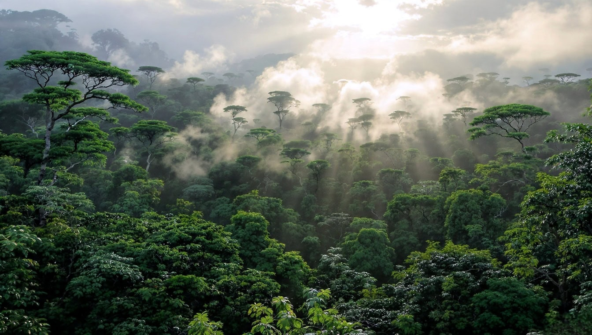

Négy egyszerű szokás
Válassz fenntartható termékeket
Keresd az FSC és Rainforest Alliance jelöléseket, ezek felelős származást jeleznek.
Keresd a tanúsítványtCsökkentsd a papírfelhasználást
Írj a lap mindkét oldalára, válassz újrahasznosított papírt, és csak akkor nyomtass, ha valóban szükséged van rá.
Gondold át nyomtatás előttKerüld a pazarlást
Tervezz előre, használd újra a tárgyakat, és javíttass vásárlás helyett. A kevesebb néha több.
Használd újraTámogasd a természetvédelmet
Adományozz, vegyél részt akciókban, vagy oszd meg az ismereteidet másokkal.
Add tovább a tudást
Rajtad is múlik
Egy kis odafigyelés is számít
A változás a hétköznapokban kezdődik. Nem kell nagy dolgokra gondolnod. Ha kevesebbet pazarolsz, tudatosabban vásárolsz, vagy jobban odafigyelsz arra, mit használsz fel, már te is hozzájárulhatsz az esőerdők védelméhez. Válassz egy dolgot, amin változtatni tudsz, és kezdd el már ma.